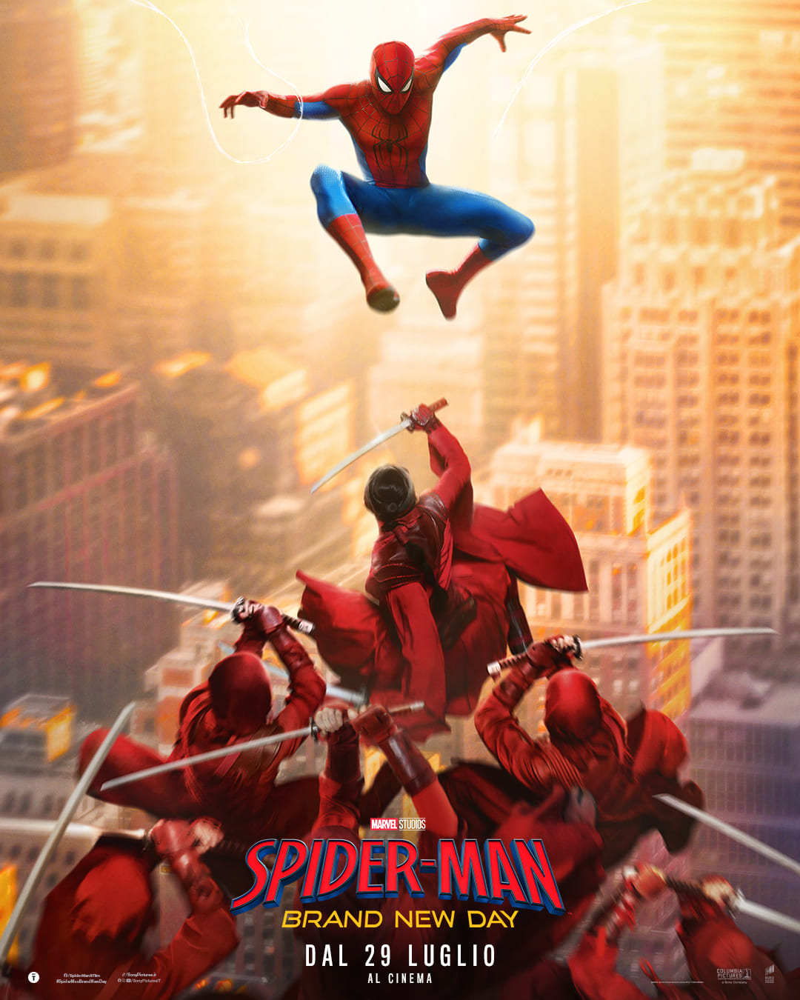

Spiderman Brand New Day

Quattro anni dopo che il mondo ha dimenticato il suo nome, Peter Parker cerca di conciliare università, lavoro e la sua vita come Spider-Man. Ma quando una misteriosa forza sconvolge New York, dovrà affrontare nuovi nemici, vecchie eredità e un’inquietante mutazione che mette alla prova i suoi poteri e il significato stesso dell’essere un eroe.
Odissea
Una nuova interpretazione dell’Odissea diretta da Christopher Nolan. Dopo la guerra, Ulisse affronta un lungo ritorno verso casa, attraversando terre ostili, incontri enigmatici e prove estreme. Tra tempo, memoria e identità, il film trasforma il racconto classico in un’esperienza spettacolare e contemporanea sulla sopravvivenza, il destino e il desiderio di ritorno.
Greta e le favole vere
Greta, 9 anni, libera un cucciolo di orso polare rapito in Norvegia dai perfidi Igor e Valentina. Con gli amici Sauro, Nicola e Katie decide di riportarlo al Polo Nord, ispirata da Greta Thunberg. Tra pericoli e inseguimenti, il viaggio diventa una missione per difendere la natura e credere nei propri ideali.